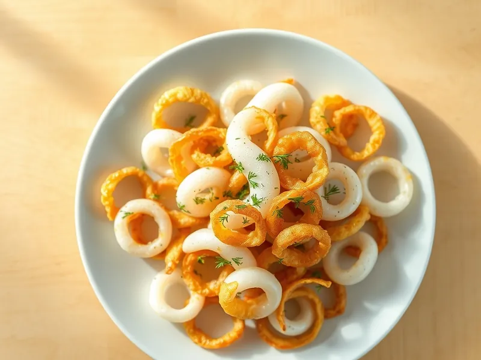

Фото: Иллюстрация ИИ, Cloudflare Workers AI
Кальмары жареные с луком
Полоски кальмара, быстро обжаренные с золотистым луком
20 мин2 порц.378 ккал на порциюБ 46 · Ж 16 · У 15Русская кухня
Продукты на 2 порц.
- Кальмар500 г
- Лук репчатый2 шт
- Растительное масло1 ст. л.
- Сметана 20% по желанию1 ст. л.
- Чеснок по желанию1 зуб.
- Соль2 щеп.
- Перец чёрный молотый2 щеп.
- Укроп по желаниюпо вкусу
Как готовить
- Опустите тушки кальмара в кипяток на 10 секунд, затем снимите плёнку и удалите хорду.
- Нарежьте кальмары полосками или кольцами, лук полукольцами.
- Обжарьте лук в масле на среднем огне 5-6 минут до золотистого цвета.
- Прибавьте огонь до сильного, добавьте кальмары, соль и перец. Жарьте, помешивая, 2-3 минуты, пока они не станут белыми и упругими.
- По желанию добавьте сметану и чеснок, прогрейте 1 минуту и посыпьте укропом.
Совет. Кальмары жарят не больше 3 минут. Если передержали, тушите 30 минут, тогда они снова станут мягкими.